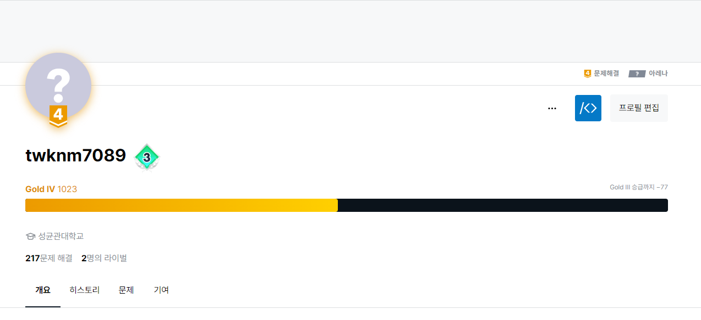

가을을 맞이하며...
시간도 어느덧 지나 가을이 되었다. 지난 2달간은 정말 바쁜 날이었다. 9월도 어느덧 9일을 맞이한 오늘, 지난 게시물에 이어 8월과 9월 초를 되돌아보겠다.
코로나로 인한 고생
평소 조심해 왔던지라 지금까지 단 한번도 코로나에 걸린적이 없던 나였지만, 8월 4일 금요일부터 몸상태가 급격히 안좋아졌다. 8월 6일 결국 확진판정을 받고 5일간 자택 대기에 들어갔었다. 힘든 시간이었지만 더욱 바빠지기 전에 걸린게 그나마 다행이라고 생각한다.
알고리즘 공부의 길
알고리즘은 프로그래밍의 기초라고 생각한다. 어떤 주어진 문제에 대해 얼마나 컴퓨터적으로 생각할 수 있는가의 척도인지라 열심히 노력했다. 주로 백준과 SWEA 사이트에 올라왔던 알고리즘 문제를 풀어보며 공부했다. 과거부터 조금씩 풀고는 있었으나 JAVA로 주력 언어를 바꾼 후, 또, 개발자의 길을 걷기 시작하기로 마음먹은 이후 제대로 공부한 것은 이번이 처음인지라 많이 힘들었지만 재미있었다.
알고리즘 공부를 본격적으로 하며 알고리즘 스터디에 들어갔다. 사람들과 문제를 같이 풀고 결과를 공유하며 같은 문제도 정말 다양한 접근법이 존재하고, 비슷한 로직을 썼어도 구현 방식이 천차만별인 것을 실감했다. 다양한 사람들의 코드를 보다보니 사고의 폭이 넓어진 느낌이 들었다.
개인적으로는 문제를 풀면 매번 문제의 상단부에 문제 해결을 위해 썼던 전략과, 주석을 통해 자세한 코드 설명을 하는 습관이 생겼다. 문제를 풀 때 했던 로직을 글로 한번 정리해보니 사고의 체계가 잡히는 느낌이 들었고, 실력도 점차 향상됨을 실감했다. 또, 그러한 결과를 아카이빙 해두었는데, 내 github에 이를 올리며 관리하고 있다. 내 아카이브 링크
이러한 노력이 빛났는지 백준도 골드로 승급했고, 이제는 골드4다. 꾸준히 해서 나중에는 랭커들처럼 어려운 문제도 잘 해결하는게 소원이다.

CS 공부도 철저히
개발에 있어서 실전적인 코드 스킬도 중요하지만 기본기도 상당히 중요하다고 생각한다. 코드만 잘 치는 개발자가 아닌 좀 더 넓게 볼줄 알고, 좀 더 깊게 생각하려면 컴퓨터 사이언스에 대한 기초 이해는 필수적이다. 학창시절, 컴퓨터 구조론이나 통신 관련 과목을 조금 들어보았고, 평소에도 이쪽 분야에 관심이 많아 이것저것 들은건 많지만 이제 슬슬 가물가물해진다. 그렇기에 대학강의를 들으며 공부하려고 한다.
이번 가을의 경우 반효경 교수님의 kocw에 올려진 운영체제 강의를 들으려고 한다. 강의를 듣기 시작하며 소위 공룡책이라 불리는 책도 주문했다. 탄탄한 기본기 하에 꾸준히 발전한 개발자가 되는 것이 내 목표다.
앞으로의 계획
슬슬 입사지원의 시기가 찾아오고 있다. 이런저런 기업의 원서를 보며 기업분석을 진행중이다. 하지만 개발자로서의 실력이야말로 가장 중요한 재산이라 생각한다. 알고리즘, CS관련 공부를 계속 진행하며 공부를 해 나갈 예정이다. 다음 업데이트가 언제 이루어질지는 모르겠지만 어제보다 더 나은 개발자가 되기 위해 부단히 노력해, 다음에는 더 멋진 모습으로 찾아오고 싶다.